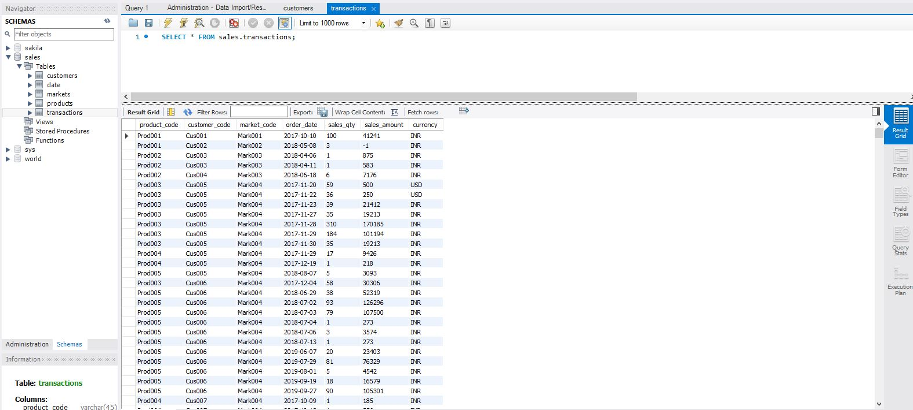

Github Link
Sales and Profit Analysis and Visualization of AtliQ Hardware
In this project, i used the database of AtliQ Hardware. It is a company which supplies computer hardware and peripherals to many clients across India. The company has a head office in Dehli and regional offices throughout India.
I tried to create a real world scenario in which the company's total revenue is declining every year. I used the database provided in the internet. Link of database. I used MySQL for database and Tableau for visualization.
Goal:
The main goal of this project was to create an interactive dashboard using a visualization tool sothat it will be easy for the Managers to get the informations regarding the sales, products, customers, profit and losses.
The Steps Involved:
- 1. Importing data into MySQL database:
-First, i collected the required database from the internet and imported those data in MySQL. Applied different SQL queries to view different sales information with respect to locations, year, customer, cities, etc.

- 2. Data Cleaning & ETL in Tableau:
-I then connected the MySQL database to tableau and performed cleaning of data to eradicate various impurities. - 3. Designing Individual Tableau Sheets:
-In this step, i designed individual Tableau sheets like: Total revenue, Total sales, sales by years, sales by months, revenue by markets, revenue by years, top customers, top products, total profit, profit by years and more. - 4. Designing the final interactive dashboard:
-Finally i designed two dashboard. First one giving the insights on sales with respect to the revenues. Second one giving the informations on profit or loss

Project Result:
At the end of this project, i created two interactive dashboard which can be used to gain lot of insights by the managers. I learned a lot of data analysis techniques which can be used in real world. I had a lot of fun doing this project as well. The dashboard can be found here (Tableau Online).